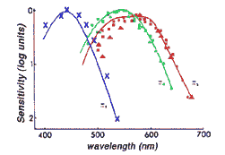

Почему мы видим красный цвет красным
Мне кажется, что красный цвет похож на оранжевый и не похож на зелёный. Это естественно, или просто меня так приучили с детства?
Можно нарисовать линейную шкалу, вдоль которой красный цвет плавно переходит в зелёный, не проходя через оранжевый. Может ли быть, что кому-то зелёный цвет кажется ближе к красному, чем оранжевый?
Может ли быть, что кто-то видит радугу со сдвигом по фазе. Видит красный вместо зелёного, зелёный вместо фиолетового, и фиолетовый вместо красного. Можно ли это проверить? К чему это приведёт? Правильно ли поставлен этот вопрос?
Когда речь заходит об "упорядоченных ощущениях", то у большинства из нас подобных вопросов даже не возникает.
Почему мы чувствуем холод именно холодным, а не каким-нибудь другим? Почему мы слышим громкий звук именно громким?
А в чём проблема? Ясно, что звуки можно упорядочить по громкости и по высоте. Видимо, ухо хорошо приспособлено к различению разных громкостей и высот. Следовательно, мозгу не так уж трудно уловить эту упорядоченность. Это приводит к тому, что мы субъективно упорядочиваем громкости и высоты звуков именно так, как они упорядочены по их физическим свойствам.
Кажется, с восприятием цветов дело обстоит сложнее. Используются двумерные и даже трёхмерные (по числу "основных" цветов) шкалы цветов. Существует несколько стандартных цветовых таблиц, в которых соседними оказываются разные цвета. Похоже, что упорядочить цвета не так просто.
Но и не так сложно. Физическая шкала цветов в принципе не отличается от шкалы звуков. Высоты тона и цвета могут быть однозначно связаны с линейной шкалой частот. Громкость и яркость представимы через шкалу потока мощности.
Линейная шкала цветов, вроде радуги, содержит все воспринимаемые цвета. Шкала частот от 20Гц до 20кГц содержит все высоты звуков. Значит, уверенность в одинаковости восприятия звука, и предположение о возможном неодинаковом восприятии цветов основаны не на природе цвета и звука, а на чём-то другом. Наверно, на том, что мы плохо представляем себе устройство органа слуха, зато слышали о трёх видах цветочувствительных колбочек.
Сомнение более конструктивно, чем необоснованная уверенность. Нужны ли вообще разумные пределы сомнению? Нам больно одинаково? Возможен ли сдвиг по фазе в чувстве голода, боли, усталости? Может кто-то воспринимает полную изнурённость, как просто усталость, усталость как бодрость, а бодрость, как полный упадок сил?
И вообще, откуда берётся такое разнообразие ощущений? Знакомы ли нам все принципиально допустимые "конструкцией человека" разновидности ощущений?
Мария полжизни прожила в чёрно-белом мире, где и стала доктором наук по любимой ею теме - восприятию цветов. Со зрением у неё всё в порядке, однако никаких цветов, кроме различных по яркости оттенков серого цвета она пока не видела. И вот она выходит на улицу. Какими она увидит наши цвета? В любом случае, это будет новое ощущение, не сводимое к "книжным знаниям".
Можем ли мы выйти куда-то, и обнаружить, что мы способны воспринимать другие чувства? Допустим, мне дали новый орган - датчик магнитного поля, подсоединённый к нервной системе через вживлённые контакты или через индуктивный канал. На что похож новый спектр ощущений, соответствующий шкале напряжённостей поля?
Может ли кто-то воспринимать зелёный цвет как красный, а красный как зелёный? Допустим, именно вы имеете такой "дефект зрения", не нарушающий информативность цветового восприятия. Нашу радугу ( красный , оранжевый, жёлтый, зелёный , голубой, синий, фиолетовый) вы видите несколько иначе: зелёный , оранжевый, жёлтый, красный , голубой, синий, фиолетовый.
Пусть, для простоты рассуждений, в природе нет других цветов, кроме перечисленных. Вы видите розу и считаете её красной. Цвет розы вызывает у вас такое же чувство цвета, какое у меня вызывает цвет зелёного листа. Листья вы воспринимаете красными, такими, как я вижу розу, но вы, как и я, считаете их зелёными. Так вас научили.
Никакие рассуждения и эксперименты не могут доказать, что вы воспринимаете зелёный и красный цвет не так как все. Также и вы не можете установить, что другие люди видят розу в ином цвете. Вы считаете, что все люди в принципе устроены одинаково, и они воспринимают цвет розы таким же "красным", каким её видите вы.
Из этого мысленного эксперимента кроме всего прочего следует вывод о том, что не требуется всем одинаково воспринимать один и тот же цвет радуги. Достаточно различать цвета. Неспособность различать некоторые цвета уже можно обнаружить, и это может привести к ухудшению качества жизни.
Если для выживания достаточно отличать красный цвет от зелёного и не требуется иметь встроенное специфическое восприятие красного цвета, то зачем эволюция дала нам это восприятие?
Вообще-то, зрение устроено не очень совершенно. Мы можем составить зелёный цвет из синего и жёлтого, а можем и из других цветов. К этой неоднозначности зрения приспособлены упомянутые выше таблицы цветов, которые используются не для представления всех возможных цветов, а для смешивания красок.
Слух устроен лучше. Однако вы можете удивиться, узнав, что в улитке уха нет чувствительных элементов, настроенных на определённые высоты тона или громкости звука. Представьте, что на каждую ноту реагировал бы отдельный резонатор. Тогда при повреждении некоторых чувствительных элементов, мы бы вообще не слышали, или очень тихо слышали некоторые ноты. Ухо устроено проще и надёжнее. При всех высотах тона и громкостях работают практически все волосковые рецепторы ( Возможности мозга ). Физически, они реагируют на касание "текториальной" мембраны. Из потока сигналов о "возбуждении" тысяч рецепторов мозг выделяет то, что требуется для узнавания и действия.
Сознание обнаруживает в звуке частоту, громкость, тембр и прочие "культурно обоснованные" признаки, ассоциативно привязанные к другим ощущениям, источником которых тоже является внешний мир.
Для кошки шуршание под полом вообще не "звук", а один из признаков мышки. Кошка различает оттенки запахов и звуков, но, наверно, не отличает "обоняние" и "слух", так как приписывание частей потока восприятия к органам чувств является интерпретацией.
По аналогии с цветом розы, громкий звук вызывается падением большого дерева, а тихий звук - падением маленького деревца. Калибровка шкалы громкости происходит по мере накопления опыта путём ассоциативной привязки к внешним событиям, а не потому, что "громкое" и "тихое" ощущение принципиально отличаются по своему внутреннему субъективному представлению, или по формату нервного информационного потока. При развитии органа слуха эволюции было достаточно, чтобы мы различали громкий и тихий звук, и не требовалось, чтобы восприятия таких звуков были какими-то вполне определёнными.
Калибровка цветового восприятия тоже происходит через ассоциативную привязку к внешнему миру. Красный предмет имеет цвет розы, а зелёный - цвет листьев.
Когда Мария впервые выйдет на улицу, то она не увидит цветов, так как сначала мы видим то, что узнаём. Возможно, она увидит, что в нашем мире у серого цвета есть "оттенки". Живой цветок розы и её листья различаются немного больше, чем в её чёрно-белом мире. Со временем она обнаружит многие предметы по окраске похожие на розу, и многие другие - похожие на листья. Она научится надёжно различать красный и зелёный цвет, и даже скажет вам, что эти цвета совсем не похожи. Если только будет не слишком поздно. С возрастом способность к обучению ухудшается.
Новые ощущения формируются не сразу. Слепая женщина, приучившаяся к использованию звукового локатора , сначала слышала "звуки предметов". Это помогало ей ориентироваться, не касаясь предметов. Только через некоторое время у неё возникло зрительное ощущение.
Новичок в музыке просто не слышит того, что доступно опытным слушателям и музыкантам. Для развития каждого чувства требуется время и тренировка. Поступая учиться в музыкальную школу, мы выходим куда-то , чтобы приучиться чувствовать то, что недоступно без специального опыта.
Получается, что физическое устройство органов не так уж важно, если только они не теряют информацию. Опыт восприятия внешнего мира играет определяющую роль в формировании ощущений, адекватных внешним объективным стимулам.
Чтобы это проверить можно провести эксперимент с очками, взаимозаменяющими красный и зелёный цвет без потери информативности. Я думаю, что человек способен привыкнуть к таким очкам. Через некоторое время он снова увидит розу красной. А когда снимет очки, то увидит её зелёной, пока опять не приспособится к задаваемой внешним миром карте цветов.
Если опыт даст другой результат, и человек в таких очках всё время будет видеть розу зелёной, то придётся признать, что либо существует "встроенное" специфическое восприятие каждого цвета, либо приучение к различению цветов происходит в раннем детстве, а затем эта способность теряется.
Я думаю, что не полностью теряется. Женщина, ослепшая в результате аварии, в возрасте больше 40 лет снова научилась видеть при помощи звукового локатора. Она видит глубину пространства и форму предметов, и иногда даже забывает, что эта информация приходит через слух.
Пока нет данных о том, что у слепых с детства этот способ компенсации зрения создаёт зрительные ощущения. Хотя он помогает ориентироваться. Возможно, есть критический возраст, до которого нужно освоить зрительную ориентацию.
Первоисточником зрительного восприятия являются не глаза и не зрительная система, а сам внешний мир. Конечно, удачно устроенный орган зрения здорово облегчает нам жизнь.

Webvision site
Эксперименты по цветовой пластичности
http://aria.cvs.rochester.edu/our_work/
Люди жили 4 часа в день в одноцветной комнате, или весь день носили цветные контактные линзы. Использовалось 2 цвета: красный и зелёный.
Для контроля изменения восприятия применялась шкала от красного до зелёного цвета, полученная, как часть спектра радуги, и отградуированная в единицах длины волны.
Каждый день, и после окончания эксперимента измерялось субъективное положение "чисто жёлтого" цвета (примерно 575 нм) на этой шкале. Отклонение точки жёлтого цвета при одних и тех же условиях для одного человека при повторном тестировании было не более 1 нм.
Те кто проводил время в красной комнате, стали менее чувствительны к красному, а кто в зелёной - к зелёному. Сдвиг точки жёлтого цвета доходил до 4 нм. В итоге "красные" указывали, как на жёлтый, на такой цвет, который для "зелёных" отличался от их "чисто жёлтого" на 8 нм. Это половина интервала между красным и зелёным цветом. Время восстановления нормального восприятия после окончания эксперимента - больше недели.
"Нормальное" восприятие жёлтого цвета у всех довольно одинаково. Оказалось, что у двух человек доля красных колбочек в сетчатке отличалась примерно в 3 раза. При этом точка "жёлтого" у них отличалась всего на 2 нм. Вот этот факт и говорит о настройке цветов не по "внутреннему восприятию", а по согласию с другими людьми.
Удивительно, что мы вообще чётко различаем красный и зелёный цвет. На графике справа приводится чувствительность трёх видов колбочек к разным длинам волн.
Красные и зелёные колбочки отличаются друг от друга очень мало. На уровне -3дБ "красные" колбочки отличаются от "зелёных" на 10-20 нм, а от "синих" на 100 нм.
2002-11-27